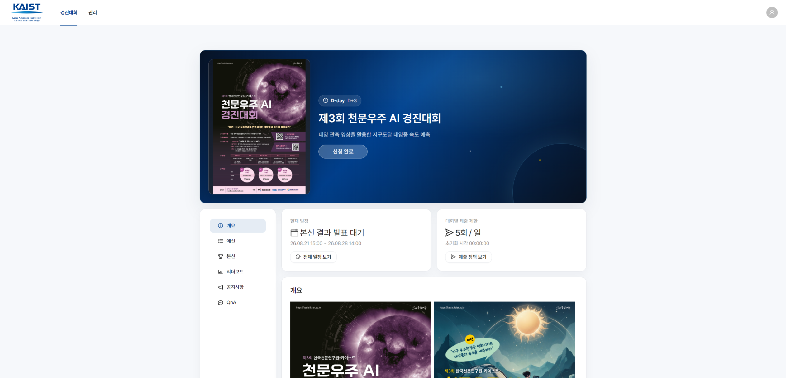
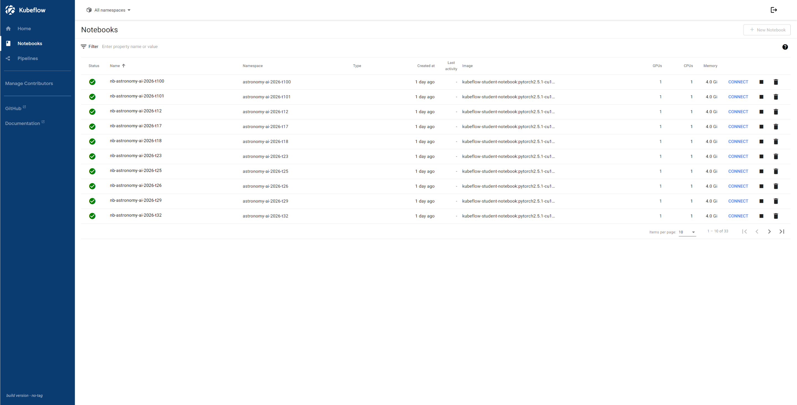
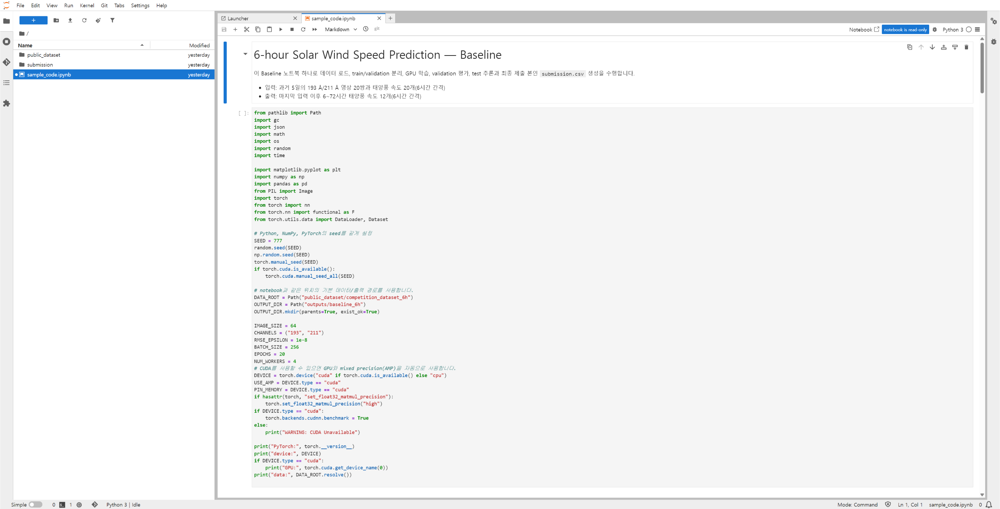
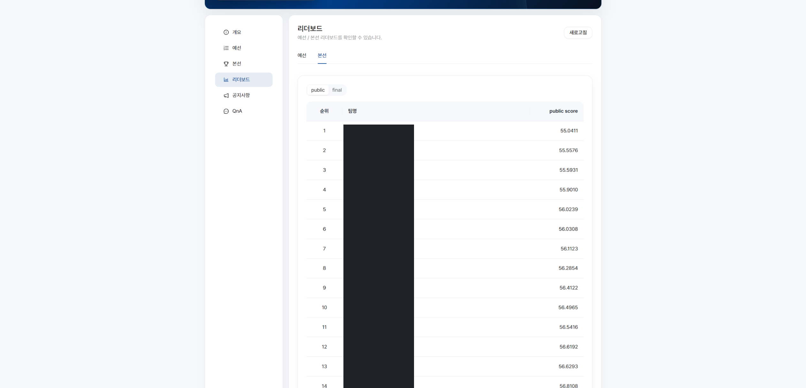
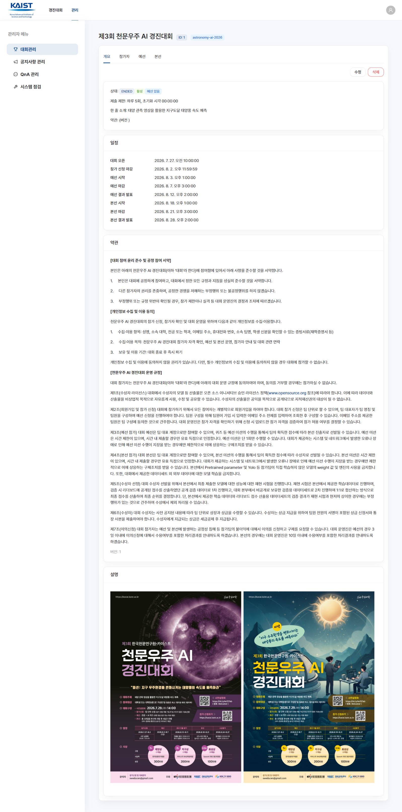
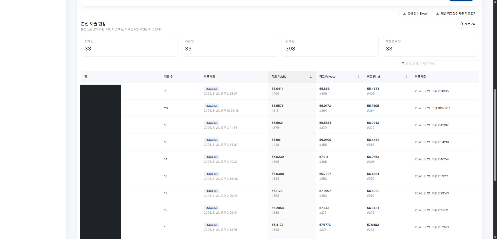

flowchart TD
U[User] --> W[Web Application]
W --> AUTH[Authentication]
AUTH --> KC[Keycloak]
W --> NB[Notebook Management]
NB --> K8S[Kubernetes]
K8S --> KF[Kubeflow Notebook]
KF --> GPU[GPU Pod]
W --> SUB[Submission]
SUB --> SS[Submission Storage]
SS --> SJ[Scoring Job]
SJ --> DB[(Database)]
DB --> LB[Leaderboard]
AI Competition Platform
Kubernetes / Kubeflow-based GPU AI Competition Platform
1. Overview
A platform that lets AI competition participants go through the entire competition workflow through a web platform.
Join competition
→ Create GPU Notebook
→ Use dataset
→ Train model
→ Submit results
→ Automatic scoring
→ Check leaderboard- ~30 teams advanced to the final round
- One NVIDIA A100 40GB GPU allocated per team
- Kubernetes / Kubeflow Notebook-based per-team work environment
- Automated submission / scoring system
NoteMy Role
- Designed and provisioned per-team infrastructure manifests (Kubeflow Profile / Notebook / PV / PVC)
- Built a Python (Jinja2)-based pipeline to auto-generate manifests
- Operated Kubernetes Notebooks and handled incidents
- Supported Keycloak-based authentication integration
- Supported building the scoring infrastructure (Kubernetes Job-based)
- Set up and supported a separate GCP validation environment (model validation itself was handled by another team member)
2. Platform UI

Notebook creation requests are passed from the backend to Kubernetes, where the Kubeflow Notebook Controller creates a Notebook Pod for each team.





The admin UI was built with Ant Design and Tiptap, and lets admins manage the competition schedule and notices.
3. System Architecture
4. Kubernetes / Kubeflow
To give each team an isolated work environment, I created one Kubeflow Profile per team (namespace-level isolation + RBAC) and provisioned a Notebook and PV/PVC inside each.
- Built a pipeline that generates per-team Kubeflow Profile / Notebook / PersistentVolume / PersistentVolumeClaim manifests using Python and Jinja2 templates
- Standardized repetitive infrastructure provisioning across ~30 teams as code
- Connected per-team GPU / CPU / Memory resources and NFS-backed storage
- Managed Notebook Pod lifecycle and handled incidents during operation
- Provided Kubeflow Pipelines alongside Notebooks, while disabling other Kubeflow features to keep the operational scope narrow
- Limited GPU allocation to one per team (no MIG or other GPU-splitting), and designed the operational policy so teams had to stop their Notebook server before running a GPU-requiring pipeline step
5. Authentication — Keycloak
The authentication structure for accessing the competition web platform and Kubeflow Notebooks.
- Keycloak-based user authentication
- Platform ↔︎ Keycloak integration
- Per-team Notebook access control
Note
[TODO: fill in further detail once the OAuth/OIDC implementation specifics are confirmed]
6. Submission & Scoring System
flowchart TD
P[Participant] --> UP[Submission Upload]
UP --> V[Validation]
V --> ST[Storage]
ST --> SJ[Kubernetes Scoring Job]
SJ --> PUB[Public Score]
SJ --> PRIV[Private Score]
PUB --> DB[(MariaDB)]
PRIV --> DB
DB --> LB[Leaderboard]
Submission Handling
- Managed submission artifacts:
submission.csv,code.ipynb, model files - File size limits and submission-count management
- CSV format validation
Duplicate Detection
Applied a hash-based check to prevent duplicate submissions of the same submission CSV.
submission.csv
↓
SHA-256
↓
Compare against existing submission hashes
↓
Duplicate / New submissionScoring Job
Ran an isolated Kubernetes Job for each submission to perform scoring.
- A separate Kubernetes Job runs for every submission
- Compares results against a hidden ground truth
- Computes Public / Private scores
- The scoring code checks out a specific tag/commit from a separately version-controlled repository before running
- The hidden ground truth is mounted read-only and is never mounted into participant (student) namespaces — scoring runs in a namespace isolated from participants’ own work environment
- Results are stored in the database and reflected on the leaderboard
Note
[TODO: only disclose the specific scoring algorithm or competition data to the extent it can be made public]
7. Validation Infrastructure
ImportantImportant — Division of Responsibility
Model validation itself (reproducibility checks, ruling on submission rule violations, model performance validation) was handled by another team member. What I was responsible for was setting up a separate GCP-based validation environment and supporting the infrastructure so that person could carry out validation independently.
My Responsibility
- Set up a separate GCP validation environment
- Provided a Kubernetes / Kubeflow Notebook environment for the validation lead
- Configured access to datasets / submissions
- Connected the necessary storage / volumes
- Provisioned Notebook Pods
- Handled infrastructure issues that arose in the validation environment
Competition Environment
│
│ dataset / submissions
▼
Separate GCP Validation Environment
│
▼
Kubernetes / Kubeflow
│
▼
Validation Notebook
│
▼
Validator8. Production Troubleshooting
Incident — DiskPressure
Problem. During operation, some teams generated or compressed large files inside their Notebook environment, causing node storage usage to spike. Kubernetes entered a DiskPressure state and began evicting Notebook Pods.
Investigation.
kubectl describe node
kubectl describe pod
df -h
du -shChecked ephemeral storage usage on the node and located the large files.
Root Cause. Large files/compressed archives in a user’s workspace exceeded the ephemeral storage threshold.
Resolution. Cleaned up the offending workspace and recovered the affected Notebook Pods.
TipLesson Learned
In multi-tenant Notebook operations, managing ephemeral storage matters just as much as GPU/CPU/RAM, and user workload environments need a disk usage policy.
Incident — MariaDB Connection Exhaustion
HTTP 502
→ Backend failure
→ Check DB connections
→ MariaDB max_connections issueStarting from an HTTP 502 during a backend outage, I checked the DB connection state and identified and resolved a MariaDB max_connections issue.
Incident — Large Model Upload
Identified a reverse-proxy buffering/request-handling issue during large model file uploads, and resolved it by adjusting the actual applied settings (Nginx proxy_request_buffering, upload size, timeout, etc.).
Incident — Notebook OOM
Investigated Pod/Kernel abnormalities caused by spikes in Notebook memory usage and addressed them by adjusting resource limits.
Note
[TODO: add any real Pod Scheduling / Provisioning incidents, if they occurred]
9. What I Learned
- Experience operating multi-user GPU workloads
- Hands-on understanding of the Kubernetes workload lifecycle
- Experience operating Kubeflow Notebooks
- The importance of storage and resource isolation
- Real user workloads create resource patterns you don’t expect
- Operational policy and observability matter just as much as building the service itself